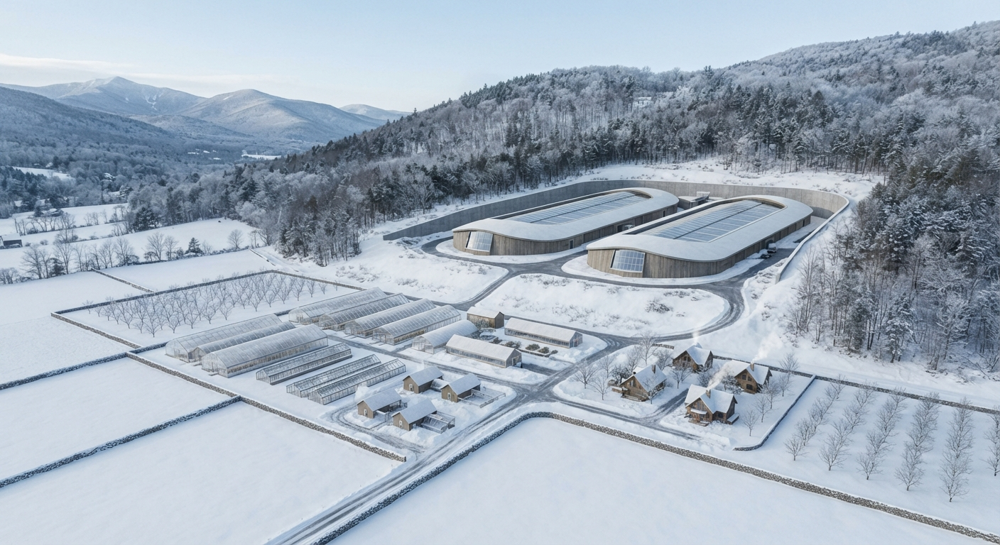

Zion twin-ring tuna habitat
Can a school of bluefin enter a second habitat while other fish keep swimming their circuit? Zion proposes two long oval channels with broad turns and one gated side passage. Each loop stays open to fish that swim past the entrance.

What the first simulation found
We ran 18 cases with three fixed gate openings, two circulation directions and three grid resolutions. On the finest grid, flow across the midpoint of each outer straight changed by less than 0.02% from its closed-gate value. This result applies to the simplified two-dimensional model with circulation driven in both loops.
| Gate | Coarse | Medium | Fine |
|---|---|---|---|
| Closed | 0% | 0% | 0% |
| Half open | 0.400% | 0.191% | 0.092% |
| Fully open | 1.140% | 0.545% | 0.262% |
The dye-transfer percentage measures transport into the second loop, not the change in outer-straight circulation reported above. These are distinct metrics and are not expected to agree. Refining the grid roughly halved the estimated dye transfer each time. The physical exchange rate remains unknown. The model omits gate motion, turbulence and fish behavior. Download the Python model, all 18 results and reproduction notes (ZIP).
The passage at water level

The next experiment uses a clear, fish-free model. Establish circulation in both loops, add dye to one and move the gate while recording water velocity at the entrance and on both outer straights. Look for a jet across the cruising route or a pocket that retains dye. Whether a school would enter voluntarily remains a separate welfare question.
What the mountain site must supply

A site comparison needs year-round water temperatures, available flow, winter heating, pumping, oxygen supply and salt replacement. The feed budget assumes a complete ration and assigns zero feed credit to poultry deaths on the farm. A lifetime-care cohort needs funding for its entire life. In a separate harvest scenario, ten fish at an assumed 400 lb dressed and $7 per pound would yield $28,000 gross per cohort before costs. Neither assumption is a buyer quote or a production result.